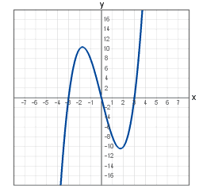

How are software license keys generated?
License keys are the defacto-standard as an anti-piracy measure. To be honest, this strikes me as (in)Security Through Obscurity, although I really have no idea how license keys are generated. What is a good (secure) example of license key generation? What cryptographic primitive (if any) are they using? Is it a message digest? If so, what data would they be hashing? What methods do developers employ to make it difficult for crackers to build their own key generators? How are key generators made?
Answer
For old-school CD keys, it was just a matter of making up an algorithm for which CD keys (which could be any string) are easy to generate and easy to verify, but the ratio of valid-CD-keys to invalid-CD-keys is so small that randomly guessing CD keys is unlikely to get you a valid one.
INCORRECT WAY TO DO IT:
Starcraft and Half-life both used the same checksum, where the 13th
digit verified the first 12. Thus, you could enter anything for the first 12
digits, and guess the 13th (there's only 10 possibilities), leading to the
infamous 1234-56789-1234
The algorithm for verifying is public, and looks something like this:
x = 3; for(int i = 0; i < 12; i++) { x += (2 * x) ^ digit[i]; } lastDigit = x % 10;
CORRECT WAY TO DO IT
Windows XP takes quite a bit of information, encrypts it, and puts the
letter/number encoding on a sticker. This allowed MS to both verify your key
and obtain the product-type (Home, Professional, etc.) at the same time.
Additionally, it requires online activation.
The full algorithm is rather complex, but outlined nicely in this (completely
legal!) paper, published in Germany.
Of course, no matter what you do, unless you are offering an online service (like World of Warcraft ), any type of copy protection is just a stall: unfortunately, if it's any game worth value, someone will break (or at least circumvent) the CD-key algorithm, and all other copyright protections.
REAL CORRECT WAY TO DO IT:
For online-services, life is a bit simpler, since even with the binary file you need to authenticate with their servers to make any use of it (eg. have a WoW account). The CD-key algorithm for World of Warcraft - used, for instance, when buying playtime cards - probably looks something like this:
- Generate a very large cryptographically-secure random number.
- Store it in our database and print it on the card.
Then, when someone enters a playtime-card number, check if it's in the database, and if it is, associate that number with the current user so it can never be used again.
For online services, there is no reason not to use the above scheme; using anything else can lead to problems.
Suggest
When I originally wrote this answer it was under an assumption that the question was regarding 'offline' validation of licence keys. Most of the other answers address online verification, which is significantly easier to handle (most of the logic can be done server side).
With offline verification the most difficult thing is ensuring that you can generate a huge number of unique licence keys, and still maintain a strong algorithm that isnt easily compromised (such as a simple check digit)
I'm not very well versed in mathematics, but it struck me that one way to do this is to use a mathematical function that plots a graph
The plotted line can have (if you use a fine enough frequency) thousands of unique points, so you can generate keys by picking random points on that graph and encoding the values in some way

As an example, we'll plot this graph, pick four points and encode into a string as "0,-500;100,-300;200,-100;100,600"
We'll encrypt the string with a known and fixed key (horribly weak, but it serves a purpose), then convert the resulting bytes through Base32 to generate the final key
The application can then reverse this process (base32 to real number, decrypt, decode the points) and then check each of those points is on our secret graph.
Its a fairly small amount of code which would allow for a huge number of unique and valid keys to be generated
It is however very much security by obscurity. Anyone taking the time to disassemble the code would be able to find the graphing function and encryption keys, then mock up a key generator, but its probably quite useful for slowing down casual piracy.